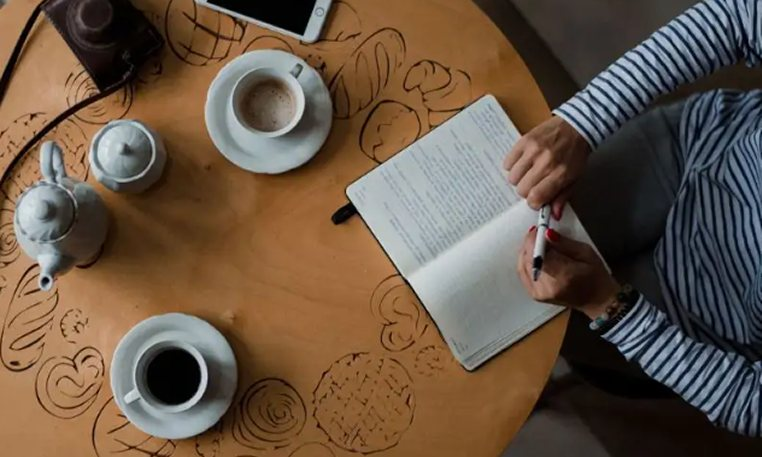

Passion de l'écriture
L'écriture est ma façon de donner vie aux idées et aux émotions.
Documentaliste et auteur passionné, je transforme la recherche et la mémoire collective en récits accessibles, entre culture, savoir et écriture contemporaine.
En savoir plusAuteur et documentaliste, je publie des livres qui allient rigueur de la recherche et plaisir de la lecture. Histoire, culture, mémoire : mes ouvrages offrent un regard unique sur le monde de l'information et du récit. Découvrez mes dernières parutions et commandez-les directement ici.
L'écriture est ma façon de donner vie aux idées et aux émotions.
Mes livres, devenus best-sellers, racontent des histoires qui marquent.
Une passion partagée avec des lecteurs fidèles réunis autour de mes œuvres.

Des textes uniques, pensés pour vous. Je mets ma plume au service de vos idées pour créer des écrits percutants, authentiques et parfaitement adaptés à vos besoins.
Voici quelques textes que vous pouvez confier à votre écrivain public.
Pages web, articles ou fiches-produits : je relis et optimise vos contenus pour valoriser vos services et renforcer votre communication.
Mémoire, rapport ou VAE : je retravaille votre texte et assure sa mise en forme selon consignes.
Indispensable à votre recherche d'emploi, je crée un CV clair, soigné et adapté à chaque poste, alliant forme et contenu.
Projet de roman, récit de vie ou livre de naissance : je vous aide à affiner votre texte grâce à une relecture finale et à la reformulation des passages clés.

Qu'ils soient administratifs ou professionnels, je rédige et optimise vos lettres : motivation, financement, réclamation ou mise en demeure.
Des écrits sur mesure, rédigés avec sérieux et discrétion. Je vous accompagne avec écoute et bienveillance pour donner forme à vos mots, en toute confiance.
ContactLes écrit sont parfaits, peu de faute d'ortographe. Je recomende*
*(Les fautes sont une blague)Trop beau et trop fort
Bouillant.